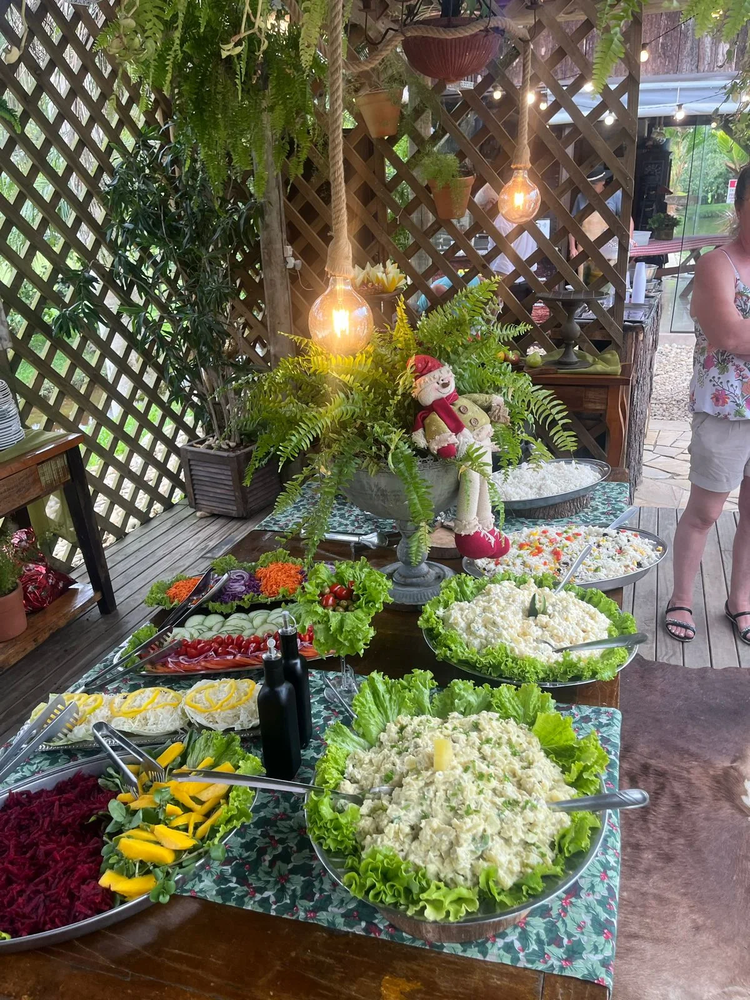
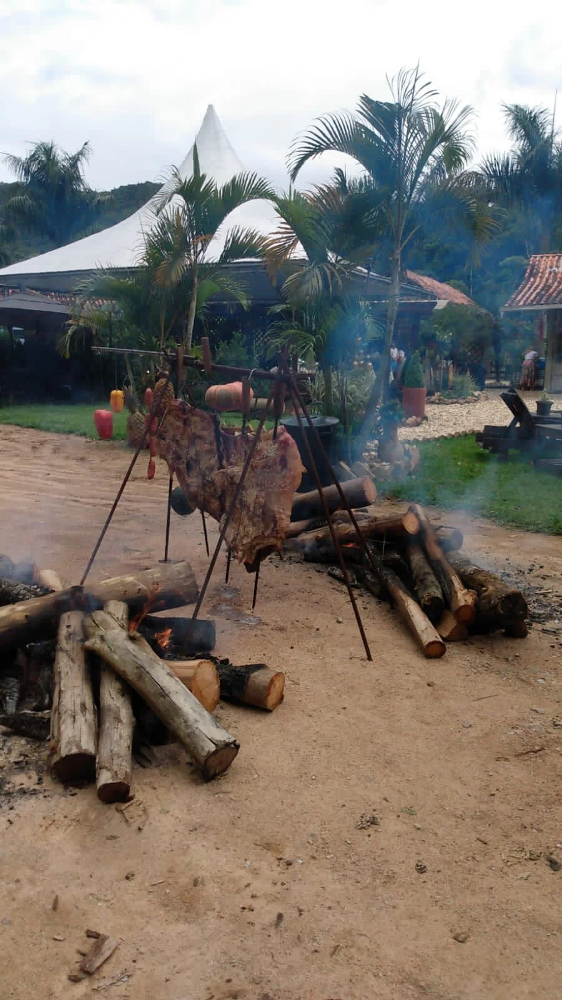
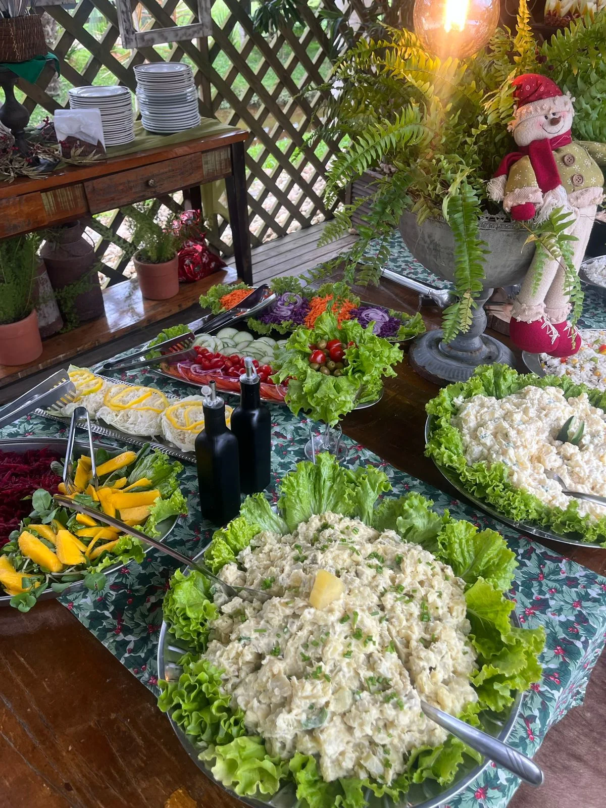
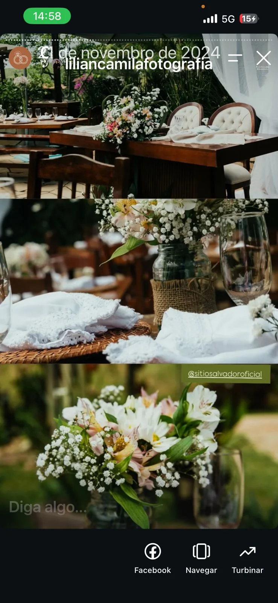
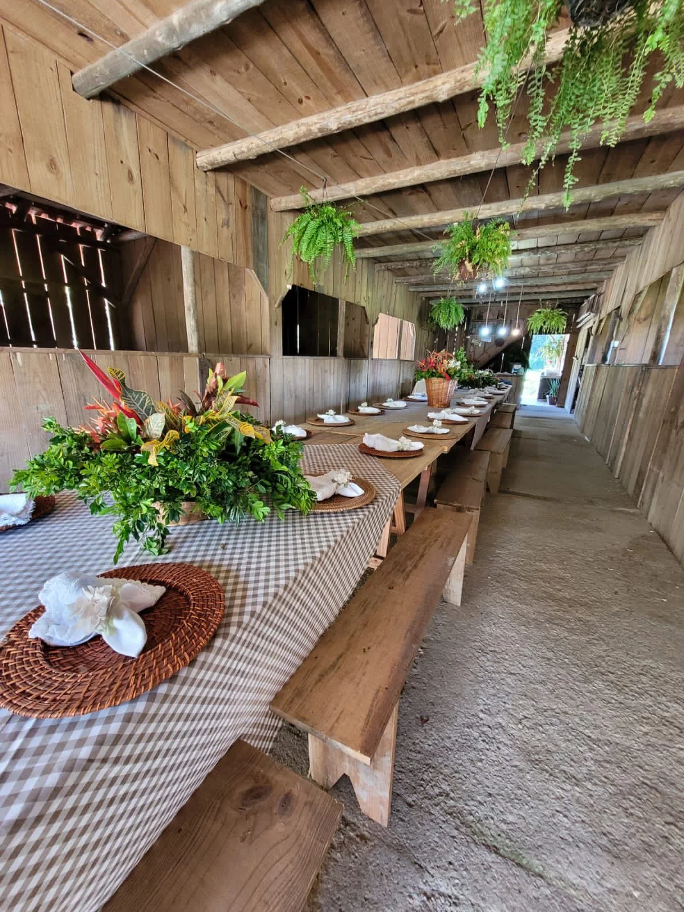

Mesas generosas, ingredientes frescos, apresentações cuidadosas e formatos que combinam com encontros no campo.

À mesa
Uma experiência visual antes mesmo da primeira garfada.
As imagens mostram uma gastronomia colorida, farta e integrada à decoração. O site valoriza esse diferencial com uma página própria, permitindo apresentar menus, formatos de serviço e experiências especiais quando essas informações forem definidas.
Buffets e mesas compartilhadas.
Pratos coloridos e apresentação artesanal.
Frutas, saladas e acompanhamentos frescos.
Possibilidade de destacar experiências de fogo de chão.
Fogo & campo
Quando o preparo vira parte do evento.
O fogo de chão cria cena, aroma e conversa. É uma experiência que combina especialmente bem com confraternizações e eventos descontraídos.

Galeria gastronômica
Cores, texturas e mesa posta.



Uma mesa que combina com o seu evento.
Na versão final, esta página pode receber cardápios, formatos de serviço e pacotes de gastronomia.